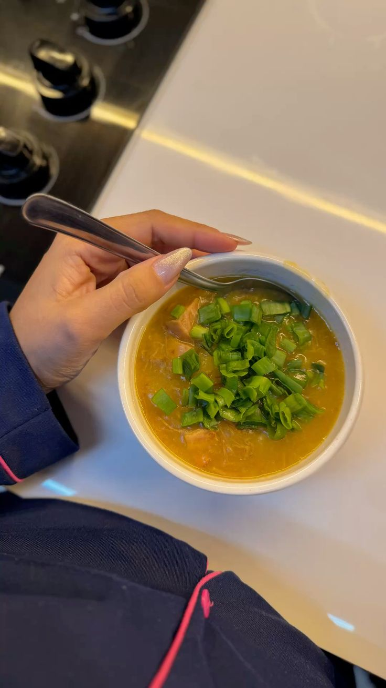
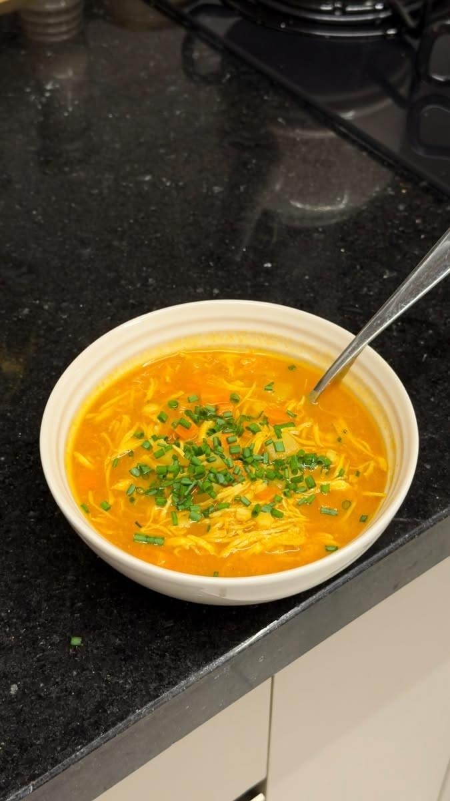

OPINIONES REALES
4.85/5


Lo que dicen nuestras clientas

"Trabajo todo el día y poder preparar estas sopitas me salva. Son deliciosas y muy reconfortantes."
Carolina Villarreal
@carovillarreal
"¡Me encantó! Las recetas son súper fáciles y por fin dejé de cenar pesado. Me siento más ligera y sin pasar hambre."
María Lopez
@marialopez_92

"Esto es justo lo que buscaba. Me encanta lo fácil que es organizar la semana. Las cremas están buenísimas."
Javier Navarro
@javi.navarro
"Nunca pensé que cenar sopa me ayudaría con los antojos de la noche. Mis favoritas son las cremosas, ¡quedan buenísimas!"
Lucía Fernández
@luci_fernandez
"El módulo de organización semanal es oro puro. Cocino una vez y ya tengo las cenas de casi toda la semana listas."
Daniela Castro
@daniela.castro88
"¡Qué gran descubrimiento! Pensé que sería más de lo mismo, pero me sorprendieron muchísimo. ¡Súper recomendado!"
Carmen Ortega
@carmen_ortega
"Mi novia compró el recetario y ahora yo soy el encargado de hacer las cenas. ¡Son facilísimas de preparar!"
Juan Pablo Silva
@juanpablo.fit
"A mi esposo también le gustaron, lo cual es un milagro. Cenamos más ligero y dormimos mucho mejor."
Ana Gómez
@ana_gomez.fit
"Gracias a la organización semanal ya no pierdo tiempo pensando qué cocinar. Muy recomendado para quienes vivimos solos."
Mateo Ruiz
@mateo_ruiz_
"Las recetas con pollo y legumbres me dejan muy satisfecha. Siento que tengo más energía al despertar."
Sofía Martínez
@sofi_martinez
"Está muy bien armado el recetario. Ahora ceno más ligero y amanezco con más ánimo. Un acierto total."
Alejandro Herrera
@ale_herrera
"Excelente material, está muy bien explicado. Yo no sabía cocinar nada y me quedan buenísimas."
Valentina Rodríguez
@valen.rodriguez
"Quería opciones saludables después del gimnasio en la noche. El módulo de sopitas con carne es justo lo que necesitaba."
Diego Álvarez
@diego_alvarez9
"Vale cada centavo. Me ayudó a crear el hábito de cenar temprano y ligero. Ya no me siento tan pesada al despertar."
Gabriela Torres
@gaby_torres90
"Trabajo todo el día y poder preparar estas sopitas me salva. Son deliciosas y muy reconfortantes."
"¡Me encantó! Las recetas son súper fáciles y por fin dejé de cenar pesado. Me siento más ligera y sin pasar hambre."
"Esto es justo lo que buscaba. Me encanta lo fácil que es organizar la semana. Las cremas están buenísimas."
"Nunca pensé que cenar sopa me ayudaría con los antojos de la noche. Mis favoritas son las cremosas, ¡quedan buenísimas!"
"El módulo de organización semanal es oro puro. Cocino una vez y ya tengo las cenas de casi toda la semana listas."
"¡Qué gran descubrimiento! Pensé que sería más de lo mismo, pero me sorprendieron muchísimo. ¡Súper recomendado!"
"Mi novia compró el recetario y ahora yo soy el encargado de hacer las cenas. ¡Son facilísimas de preparar!"
"A mi esposo también le gustaron, lo cual es un milagro. Cenamos más ligero y dormimos mucho mejor."
"Gracias a la organización semanal ya no pierdo tiempo pensando qué cocinar. Muy recomendado para quienes vivimos solos."
"Las recetas con pollo y legumbres me dejan muy satisfecha. Siento que tengo más energía al despertar."
"Está muy bien armado el recetario. Ahora ceno más ligero y amanezco con más ánimo. Un acierto total."
"Excelente material, está muy bien explicado. Yo no sabía cocinar nada y me quedan buenísimas."
"Quería opciones saludables después del gimnasio en la noche. El módulo de sopitas con carne es justo lo que necesitaba."
"Vale cada centavo. Me ayudó a crear el hábito de cenar temprano y ligero. Ya no me siento tan pesada al despertar."